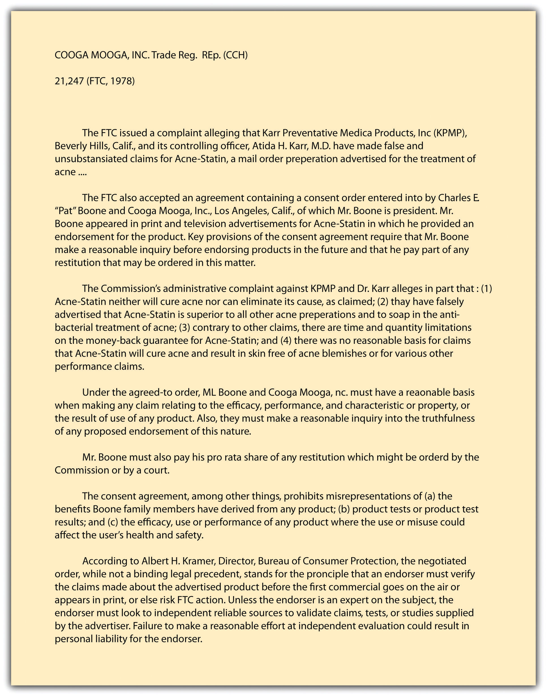

Businesses are under no general obligation to disclose everything. Advertisers may put a bright face on their products as long as they do not make a direct material misrepresentation or misstatement. But under certain circumstances, a business may be required to disclose more than it did in order not to be involved in unfair or deceptive acts and practices. For example, failure to state the cost of a service might constitute deception. Thus a federal court has ruled that it is deceptive for a telephone service to fail to disclose that it cost fifteen dollars per call for customers dialing a special 900 number listed in newspaper advertisements offering jobs.FTC v. Transworld Courier Services, Inc., 59 A&TR Rpt. 174 (N.D. Ga. 1990). Likewise, if a fact not disclosed might have a material bearing on a consumer’s decision whether to purchase the product, its omission might be tantamount to deception, as J. B. Williams Co. v. FTC (see Section 27.5.1 "False and Misleading Representations"), suggests.
Although certain words are considered mere puffery (greatest, best), other words, which have more precise connotations, can cause trouble if they are misused. One example is the word new. In most cases, the Federal Trade Commission (FTC) has held that if a product is more than six months old, it is not new and may not lawfully be advertised as such.
The efficacy of products is perhaps their most often advertised aspect. An ad stating that a product will do more than it can is almost always deceptive if the claim is specific. Common examples that the FTC continues to do battle over are claims that a cream, pill, or other substance will “rejuvenate” the body, “cure” baldness, “permanently remove” wrinkles, or “restore” the vitality of hair.
The composition of goods is another common category of deceptive claims. For example, a product advertised as “wool” had better be 100 percent wool; a mixture of wool and synthetic fabrics cannot be advertised as wool. The FTC has lists of dozens of descriptive words with appropriate definitions.
Labeling of certain products is strictly regulated by specific statutes. Under the Food, Drug, and Cosmetic Act, artificial colors and flavors must be disclosed. Other specific federal statutes include the Wool Products Labeling Act, the Textile Fiber Products Identification Act, the Fur Products Labeling Act, and the Flammable Fabrics Act; these acts are enforced by the FTC. In 1966, Congress enacted the Fair Packaging and Labeling Act. It governs most consumer products and gives the FTC authority to issue regulations for proper labeling of most of them. In particular, the statute is designed to help standardize quantity descriptions (“small,” “medium,” and “large”) and enable shoppers to compare the value of competing goods in the stores.
“Buy one, get another for half price.” “Suggested retail price: $25. Our price: $5.95.” “Yours for only $95. You save $50.” Claims such as these assault the eye and ear daily. Unless these ads are strictly true, they are violations of Section 5 of the FTC Act. To regulate deceptive price and savings claims, the FTC has issued a series of Guides against Deceptive Pricing that set forth certain principles by which the commission will judge the merits of price claims. These guides are not themselves law, but they are important clues to how the FTC will act when faced with a price claim case and they may even provide guidance to state courts hearing claims of deceptive pricing ads.
In general, the guides deal with five claims, as follows:
A common sales pitch in retail is the bait and switchA sales pitch where the retailer “baits” the prospective customer by dangling a very attractive offer, which disappears or is disparaged once the customer arrives in the store.. The retailer “baits” the prospective customer by dangling an alluring offer, but the offer either disappears or is disparaged once the customer arrives. Suppose someone sees this advertisement: “Steinway Grand Piano—only $1,000.” But when the customer arrives at the store, he finds that the advertised product has “sold out.” The retailer then tries to sell the disappointed customer a higher priced product. Or the salesperson may have the product, but she will disparage it—pointing out that it does not really live up to the advertised expectations—and will exhort the customer to buy the “better,” more expensive model. These and related tactics are all violations of Section 5 of the FTC Act. In its Guides Against Bait Advertising, the FTC lists several such unfair practices, including the following: (1) refusing to demonstrate the advertised product, (2) disparaging the product (e.g., by exhibiting a visibly inferior grade of product next to higher-priced merchandise), (3) failing to stock enough of the advertised product to meet anticipated demand (although the advertiser may say “supplies limited,” if that is the case), (4) stating that delivery of the advertised product will take an inordinate amount of time, (5) demonstrating a defective product, and (6) deliberately discouraging the would-be buyer from purchasing the advertised product.
Careless advertisers will discover that free, perhaps the most powerful word in advertising, comes at a cost. As just noted, a product is not free if it is conditional on buying another product and the price of the “free” product is included in the purchased product (“Buy one tube and get another tube free”). Just how far the commission is prepared to take this rule is clear from F.T.C. v. Mary Carter Paint Co.F.T.C. v. Mary Carter Paint Co., 382 U.S. 46 (1965). In that case, the company offered, from the time it began business, to sell on a two-for-one basis: “every second can FREE, gallon or quart.” The problem was that it had never priced and sold single cans of paint, so the FTC assumed that the price of the second can was included in the first, even though Mary Carter claimed it had established single-can prices that were comparable to those for paint of comparable quality sold by competing manufacturers. The Supreme Court sustained the commission’s finding of deception.
Product disparagementSaying defamatory things about a competitor’s product. It is a tort of defamation under common law but is actionable under Section 5 of the FTC Act where any specific untrue statement is made about a competitor’s product.—saying defamatory things about a competitor’s product—is a common-law tort, actionable under state law. It is also actionable under Section 5 of the FTC Act. The FTC brands as disparagement the making of specific untrue statements about a competitor’s product. The agency labels an indirect form of disparagement “comparative misrepresentation”—making false claims of superiority of one’s own product. Again, the common-law puffing rule would permit the manufacturer of an over-the-counter pain reliever to make the general statement “Our pill is the best.” But the claim that a pill “works three times as fast as the leading competitor’s” violates Section 5 if untrue.
Truth has always been a defense to claims of product disparagement, but even that common-law rule has been eroded in recent years with the application of the significance doctrine. A statement may be technically true but insignificant and made in such a way as to be misleading. For example, P. Lorillard Co. v. Federal Trade Commission (Section 27.5.2 "Product Comparisons") concerned a comparative study published in Reader’s Digest of tar and nicotine in cigarettes. The article suggested that the differences were inconsequential to health, but the company making the cigarette with the smallest amount of tar and nicotine touted the fact anyway.
During the 1970s, to help enforce its rules against comparative misrepresentations, the FTC began to insist that advertisers fully document any quantitative claims that their products were superior to others. This meant that the advertiser should have proof of accuracy not only if the commission comes calling; the advertiser should collect the information beforehand. If it does not, the claim will be held presumptively deceptive.
The FTC Act and state laws against misleading advertising are not the only statutes aimed at product comparisons. One important more recent federal law is the Trademark Law Revision Act of 1988, amending the original Lanham Act that protects trademarks as intellectual property (see Chapter 30 "Intellectual Property"). For many years, the federal courts had ruled that a provision in the Lanham Act prohibiting false statements in advertisements was limited to an advertiser’s false statements about its own goods or services only. The 1988 amendments overturned that line of court cases, broadening the rule to cover false statements about someone else’s goods or services as well. The amendments also prohibit false or misleading claims about another company’s commercial activities, such as the nature of its warranties. The revised Lanham Act now permits a company injured by a competitor’s false advertising to sue directly in federal court.
How wonderful to have a superstar (or maybe yesterday’s superstar) appear on television drooling over your product. Presumably, millions of people would buy a throat spray if Lady Gaga swore by it, or a pair of jeans if Justin Bieber wore them, or a face cream if Paris Hilton blessed it. In more subtle ways, numerous products are touted every day with one form of testimonial or another: “Three out of four doctors recommend…” or “Drivers across the country use.…” In this area, there are endless opportunities for deception.
It is not a deception for a well-known personality to endorse a product without disclosing that she is being paid to do so. But the person giving the testimonial must in fact use the product; if she does not, the endorsement is deceptive. Suppose an astronaut just returned to Earth is talked into endorsing suspenders (“They keep your pants from floating away”) that he was seen to be wearing on televised shots of the orbital mission. If he has customarily worn them, he may properly endorse them. But if he stops wearing them for another brand or because he has decided to go back to wearing belts, reruns of the TV commercials must be pulled from the air.
Figure 27.2
Consent Decree: Pat Boone and Cooga Mooga, Inc.
That a particular consumer is in fact ecstatic about a product does not save a false statement: it is deceptive to present this glowing testimonial to the public if there are no facts to back up the customer’s claim. The assertion “I was cured by apricot pits” to market a cancer remedy would not pass FTC muster. Nor may an endorser give a testimonial involving subjects known only to experts if the endorser is not himself that kind of expert, as shown in the consent decree negotiated by the FTC with singer Pat Boone (Figure 27.2).
Pictorial representations create special problems because the picture can belie the caption or the announcer’s words. A picture showing an expensive car may be deceptive if the dealer does not stock those cars or if the only readily available cars are different models. The ways of deceiving by creating false inferences through pictures are limited only by imagination. White-coated “doctors,” seals of the British monarchy, and plush offices can connote various things about a product, even if the advertisement never says that the man in the white coat is a doctor, that the product is related to the British crown, or that the company has its operations in the building depicted.
Television demonstrations may also suggest nonexistent properties or qualities in a product. In one case, the commission ordered the manufacturer of a liquid cleaner to cease showing it in use near hot stoves and candles, implying falsely that it was nonflammable. A commercial showing a knife cutting through nails is deceptive if the nails were precut and different knives were used for the before and after shots.
A variety of fairly common acts and practices have been held by the FTC to be deceptive (and illegal). These include the failure to disclose pertinent facts, misleading price and savings claims, bait and switch advertisements, careless use of the word “free,” and comparative misrepresentation—making misleading comparisons between your product and the product of another company.